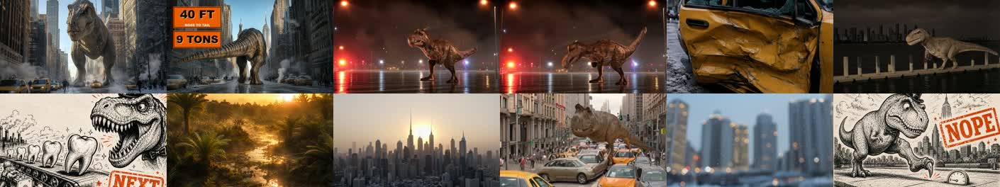
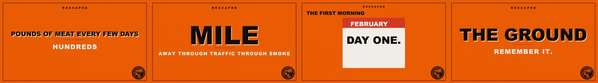
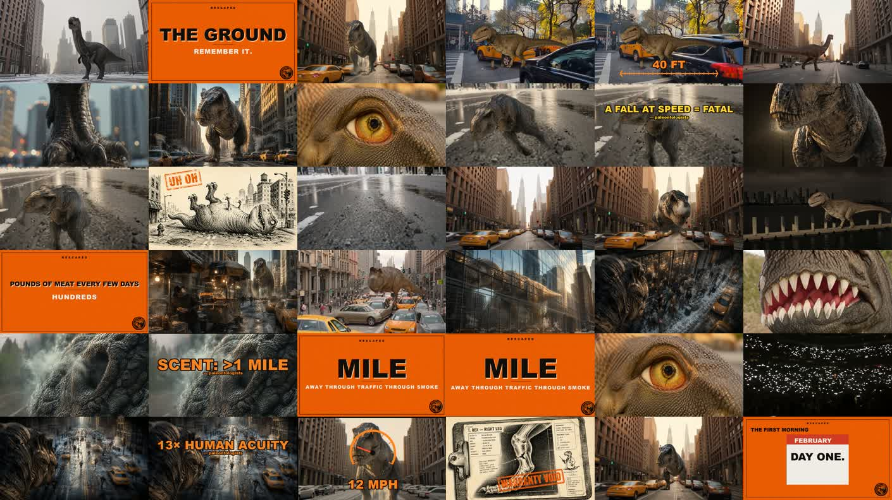

What we're making, what "approved" means in numbers, the machine that builds it, and where every piece stands. Updated 2026-06-12. Sessions: keep this page current when status changes.
A ~6-minute creature documentary: "You wake up as a T-Rex in modern New York." Mark's VO narrates survival in second person. The video is built chapter by chapter — you bless each chapter before the next is built:
HOOK (0–15s, hero stills + orange cards) → CH1 · THE BODY (size, falling, hunger, senses, speed) → CH2 → CH3 → CTA / flywheel cards (TRENDING #1 · WHO'S NEXT? · Megalodon tease). Style target = the measured grammar of the viral reference (research/viral_recreation_spec.md), not taste.

The hook you blessed: photoreal hero stills, world-consistent creature, stat chips riding ON the shot (40 FT / 9 TONS), ink-gag punchlines, warm cinematic light.
The illustrated stats you directed: every number plays as a scene ON the word — 13 FT vertical tape beside the stomping creature, pivot to side profile for 40 FT, hard cut to the bus-on-a-scale for 9 TONS. Tape / gauge / scale / speedometer / reticle — never a flat fact.

The orange card system: bright orange canvas, ink type, REXCAPED header, boiling emblem — zero black cards. Behavior rule: cards are animated typewriter flashes (~2s) or chips on the shot — never a full-frame static hold.
Source: research/style_bands.json · enforced by scripts/gate_style.py. A render is DONE only when gate_ch1.py (sync · motion · subject) and gate_style.py are both green — no session may invent a new gate or redefine done in prose.
| Axis | Band (approved) | CH1 today | Hook today |
|---|---|---|---|
| Visual events / min | ≥ 25 (winner ≈ 28) | 26.2 ✓ | 21.6 ✗ (top-up queued) |
| Longest gap w/o an event | ≤ 6s | 6.0 ✓ | 5.7 ✓ |
| Median shot length | 1.5 – 4.0s (winner 2.85) | 3.17 ✓ | 3.00 ✓ |
| Static share of runtime | ≤ 40% | 19% ✓ | 23% ✓ |
| Music bed | ≥ 90% coverage, creature-genre | ✗ wrong bed — Breaking-Law fallback track_01_tense_ducked.wav | present (level/genre review) |
| Cards | ≤ 6 per chapter · ≤ 2.2s hold · ANIMATED | ✗ 6 cards but 4 are static holds 3.1–4.6s | flash chips ✓ |
| Creature beats | composited cutout or real footage — never a flat still (your locked rule: "zero Ken-Burns-on-a-still") | ✓ 0 — all 7 converted to composites (2026-06-12) | n/a — hook is the animated hero-still open |
scripts/build_ch1_auto.py (the "recipe router"): drew from 4 cutouts, same creature every frame. Deprecated; no session may use or "fix" it.| Piece | State | What it means |
|---|---|---|
| Hook (0–15s) | NEEDS TOP-UP | Blessed look; 21.6 ev/min vs ≥25 — event-layer top-up queued. |
| CH1 · THE BODY (2:06) | REBUILT — AWAITING YOUR VERDICT | output/trex_pilot_ch1_body_540p.mp4 — now 14 approved-recipe composites (the 7 flat stills converted: statue, arms, downed-struggle, cart+TARGET gag, glass-reflection swim, crowd-POV counter, hide→jaws footage) — 30 events/min, both gates green except CARDS. Out of band: 4 over-held static cards · wrong music bed. |
| Cards animation | TO BUILD | Typewriter/chip behavior exists in rexcaped_stat_cards.py; wire into the renderer so cards flash ~2s animated. |
| 7 still beats → composites | DONE 2026-06-12 | All 7 converted through the same engine (self-layer trick for plates with no cuttable subject); CREATURE axis green, events 26→30/min. |
| Music bed | YOUR DECISION | Pick creature-genre track(s); replaces the Breaking-Law fallback. |
| CH2 · CH3 | NOT BUILT | Same builder + gates, run on those chapters' lines after CH1 bless. |
| Full assembly + ship gate | NOT STARTED | Hook + chapters + CTA, music wall-to-wall, final bands check, 1080p. |

CH1 as it stands today (1 frame / ~3.5s of trex_pilot_ch1_body_540p.mp4): your body-reveal devices, moving composites, ink gags and orange cards are all in. The two visible debts: those orange cards sit static too long, and the bed under it is the wrong genre.
output/trex_pilot_ch1_body_540p.mp4 — bless it or give timestamp + which axis fails (variety / motion / device).| This page | DESIGN.html (open in any browser) |
| Session starter | START_HERE.md — paste block for any new session |
| Approved bands | research/style_bands.json → scripts/gate_style.py |
| Style laws (source) | research/viral_recreation_spec.md |
| Your decision rules | research/edit_decision_rulebook.md → scripts/beat_director.py |
| Current renders | output/trex_pilot_ch1_body_540p.mp4 · output/ch1_contact_sheet.jpg · output/body_reveal_540p.mp4 |